ゼロからのロボットアーム入門
~ ロボットの基本操作 ~
大阪大学 中島優作
このスライドの担当範囲
- ロボットアームの動作生成でよく使われる仕組みを学んでいきます。
- コードなどはUniversalRobotの例を扱います(他のメーカーでも概ね同じ機能があるはずです)。
オススメ参考資料
このスライドと教科書の併用をおススメします
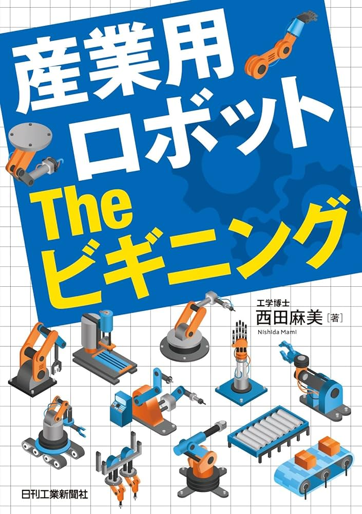
産業用ロボットtheビギニング - 産業用ロボットの基礎的な情報を網羅
イラストで学ぶロボット工学 - 学部生向けの教科書, 本格的な制御の本だが読みやすい
ロボット動作の方法
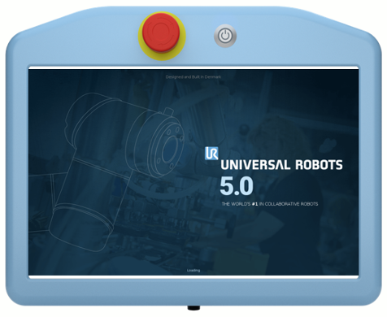
ティーチングペンダント
- ロボット用の端末
- 最近はLANを介してソフトウェアで行うものも多い
プログラミング
- Python等で動作コードを作成
- TPでは対応していない機能が使える
動作作成の手順
- TCPの設定
- 座標系の指定
- モーション種類の決定
- 実行・テスト
アプリを開いてください
→ 全画面表示
この後の説明はアプリを見ながら行います
ステップ①TCPと重心
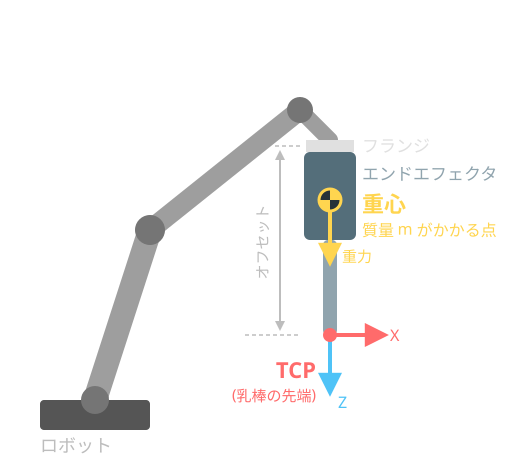
- エンドエフェクタ: 手先のツール
- TCP: 実際に動かしたい点と向き
例) 乳棒の先端 - 重心: ツールの質量がかかる点
- どちらもフランジからの位置で登録
- 重心は質量とセットで設定する
複数のTCP
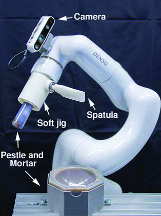
出典: Y. Nakajima et al., "Robotic Powder Grinding with a Soft Jig for Laboratory Automation in Material Science," IROS 2022, Kyoto, Japan, pp. 2320-2326, doi: 10.1109/IROS47612.2022.9981081
- それぞれのツールに対してTCPを登録しておくと便利
例)TCPを乳棒とヘラの先端に設定
場面によってTCPを切り替えることで最小限のプログラムの変更で複数のツールが使える
エンドエフェクタの重心設定
設定するのは質量と重心位置（フランジ基準）
重心設定が役に立つ場面
- フリードライブでの重力補償
- 手先のフォーストルクセンサ値の重力補償
- 加減速の調整
ステップ②ロボットの座標系
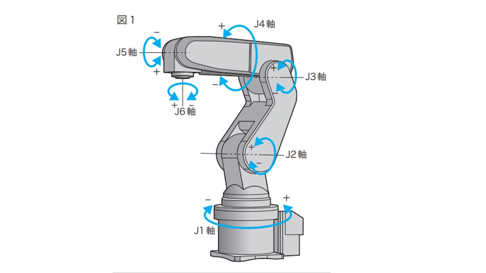
関節座標系
関節それぞれの角度を指定
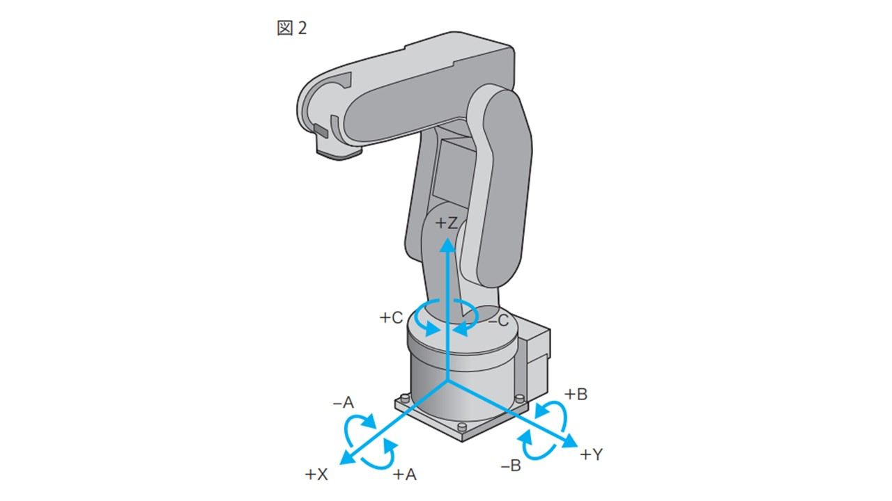
ベース座標系
ロボットの根本を基準にTCPの座標を指定
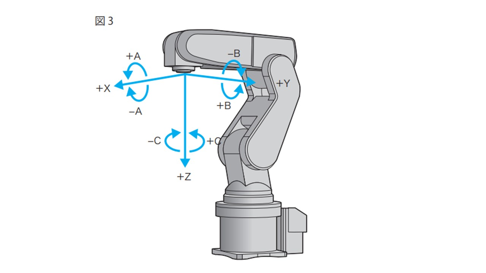
ツール座標系
現在のTCPの座標系を基準に次のTCPの座標系を指定
座標系による動きの違いを確認↓
ジョグ動作
- 関節や手先を少しずつ動かす動作をジョグ動作という（薄い色：動かす前）
- アプリのジョグ機能（ボタン長押しで連続移動）で、3つの座標系での動きの違いを確認できる
座標系の表現↓
TCPの姿勢表現
姿勢(pose) = 位置 + 向きで表すことが多い
基本はXYZの座標系に対する位置と向きを考える
→ 全画面表示
ステップ③動作指令は2分類
経路を規定しない・関節空間で補間
→ UR:
movej()
TCPの経路形状を規定・直交空間で補間
→
movel()
→
movec()
詳細は以下↓
PTPの詳細
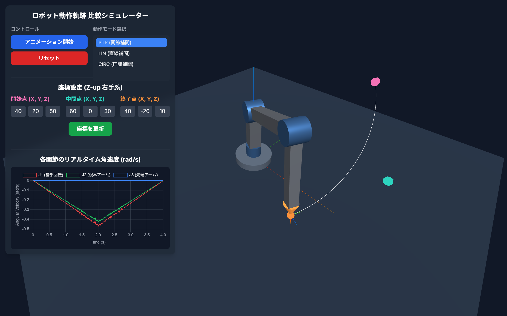
- 関節空間での補間（UR:
movej） - 各関節が最も速く目標に到達するように動く(グラフ)
- 手先の軌道は予測できない
- 障害物がない環境で使用する動作モード
LINの詳細
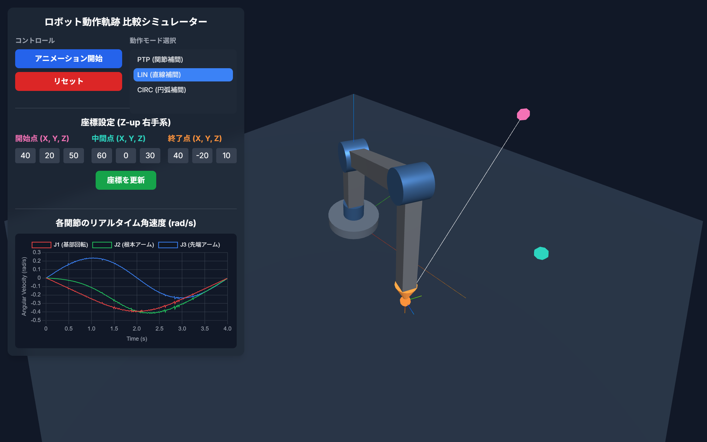
- CPの直線（UR:
movel） - 手先が直線的に移動
- 関節の可動範囲や特異点により動きに制限
- 部品挿入や溶接で使用
- PTPよりも時間がかかる
CIRCの詳細
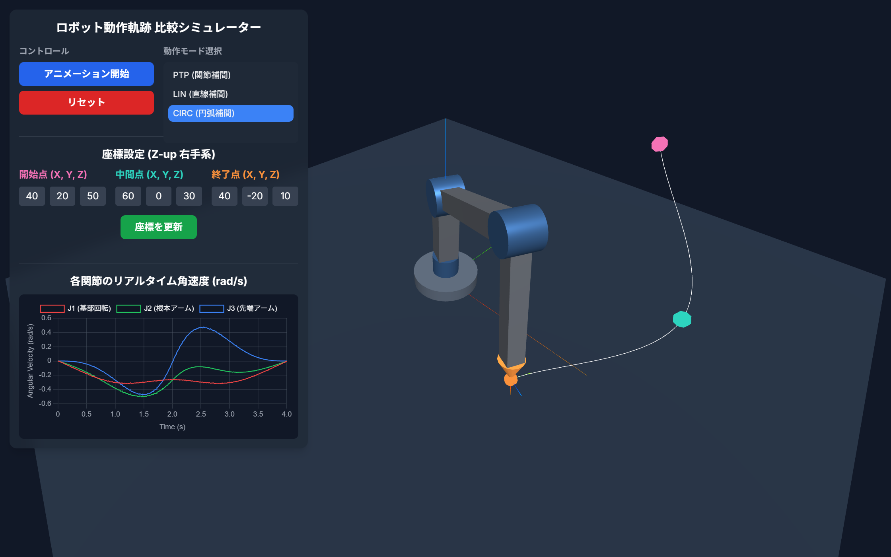
- CPの円弧（UR:
movec） - 中間点を指定して円弧を描く
- 障害物回避や滑らかな動作で使用
- 角を持つ物体の加工などに有効
- 3点（始点・中間点・終点）が必要
URScriptでの対応
| 分類 | 関数 | 位置の与え方 |
|---|---|---|
| PTP | movej(q, a, v, t, r) | 関節角 [j0..j5] |
| LIN | movel(pose, a, v, t, r) | TCP姿勢 p[x,y,z,rx,ry,rz] |
| CIRC | movec(pose_via, pose_to, a, v, r) | 経由点＋終点のTCP姿勢 |
movej([0, -1.57, 1.57, 0, 1.57, 0], a=1.4, v=1.05)
movel(p[0.3, -0.2, 0.25, 0, 3.14, 0], a=1.2, v=0.25)
movec(p[0.35, -0.1, 0.25, 0, 3.14, 0], # 経由点
p[0.3, 0.0, 0.25, 0, 3.14, 0], # 終点
a=1.2, v=0.25)
- 引数の型に「関節空間 / 直交空間」の違いがそのまま現れる
※ movej に pose を渡すと内部で逆運動学を解き、関節空間で補間します
連続的なロボットモーション
- 複数の姿勢(waypoints)を指定して動かしたときに動きがガタつく
ガタツキの少ないモーションを作るには↓
滑らかなモーションの作り方
→ 全画面表示
ブレンド
（コーナー丸め）
- 教示点で止まらず手前で丸めて通過
- stop point ⇔ fly-by point
メーカーごとの指定方法↓
ブレンドの指定はメーカーで違う
| メーカー | 呼び方 | 指定する量 | 例 |
|---|---|---|---|
| UR | blend radius | 丸めの半径 [mm] | r=10mm |
| ABB | zone data（fly-by point） | 教示点からのゾーン半径 [mm] | z10 |
| KUKA | approximate positioning | 距離 / 速度 / 時間から選択 | mm, %, s |
| FANUC | termination type CNT | 経路に対する割合（無次元） | CNT100 |
| 安川 | PL（position level） | 離散レベル 0〜8 | PL=5 |
- 概念は同じでも「半径」で指定するのはURなど一部だけ
- このスライドでは概念を「ブレンド」、URでの指定量を「ブレンド半径」と呼びます
※ 軌道計画の LSPB（Linear Segments with Parabolic Blends）の "blend" は速度プロファイルを滑らかにする話で、コーナー丸めとは別物です
補間方法とブレンドは独立した軸
PTP / LIN / CIRC
→ どう動くか
停止 / 丸めて通過
→ 経由点で止まるか
movel(p1, a=1.2, v=0.25, r=0) # p1 で停止してから次へ（stop point）
movel(p1, a=1.2, v=0.25, r=0.05) # p1 の 50mm 手前から丸めて通過（fly-by）
- URでは軸Bが全move関数の引数
r1つに集約 → 2軸が独立だと見えやすい - 「
movelなのに角が丸まって干渉した」は軸Bの問題
ブレンド半径の良し悪し（URの例）
→ 全画面表示
- 二等分線を中心とした円が新しい経路です
- 点を正確に通過しないので細かい動きはできません
- 動作精度と動きの滑らかさのトレードオフで調整が必要です
URでブレンドを使うときの注意
- 隣り合うブレンド円を重ねない
- 重なると実行時エラー
- 目安：
r< 教示点間距離の半分
- 最初と最後の点はブレンドできない
- 停止状態から / への遷移になるため
補足：丸めずに連続で動けない？
- 直線の角は位置は連続でも速度の向きが不連続（C⁰ だが C¹ でない）
- 法線加速度 an = v² / ρ は角（ρ = 0）で発散
- 角で選べるのは2つだけ
- v = 0：止まる（r = 0）→ 時間を失う
- ρ > 0：丸める（r > 0）→ 形を失う
丸めるのは妥協ではなく、角を止まらずに通る唯一の方法
補足：ブレンド半径は精度と速度の交換レート
vmax = √( amax · r )
| 許容加速度 amax | ブレンド半径 r | コーナー通過速度の上限 |
|---|---|---|
| 2 m/s² | 50 mm | 0.32 m/s |
| 2 m/s² | 10 mm | 0.14 m/s |
- r を小さくすると経路は正確になるが、コーナーで自動的に減速する
- 「ブレンド半径を小さくしたら遅くなった」の答えはこの式
※ 90°コーナーを半径 r の円弧で丸めた場合。一般には r ではなく曲率半径 ρ で vmax = √(amax · ρ)
補足：止まる vs 丸める
→ 全画面表示 r を変えて通過速度と所要時間、an の跳び方を比べる
補足：丸めない連続パスはある？
- 教示点を通るスプライン（KUKA の SPL、CNC の NURBS 補間など）でも、折れ線の角は通らない
- 違うのは誤差の置き場所だけ
| 方式 | 教示点そのもの | 教示点を結ぶ折れ線 |
|---|---|---|
| 停止点 | 通る | 一致する（ただし止まる） |
| ブレンド | 通らない（手前で丸める） | コーナー付近でずれる |
| スプライン | 通る | 点と点の間でずれる |
「誤差ゼロで滑らか」は存在せず、どちらのずれを許すかの設計判断
補足：振動はどこから来る？
- 円弧ブレンドは向きは連続（C¹）だが曲率が不連続（C² でない）
- 円弧に入る瞬間 an が 0 → v²/r に跳ぶ → ジャーク ∞ → 構造を揺らして残留振動
- 上位の制御器はクロソイド・5次多項式・Bスプラインで曲率も連続にする
- 角を速度 > 0 で通れない（幾何）
- 関節トルク・加速度に上限がある（アクチュエータ）
- 停止を挟むとサイクルタイムが伸びる（生産性）
- 加速度の急変が振動を励起する（構造）
- 振動と停止が加工品質を落とす（プロセス）
「振動するから丸める」は因果が逆。丸め方が粗いと振動する
補足：現場でブレンドが必須な理由
なぜ必要か
- サイクルタイム：毎点で減速・加速・整定。ブレンドだけで2〜3割縮むことも
- プロセス：塗布・溶接・塗装は速度一定が必要。止まれないから丸める
- 機械寿命：減速機・ブレーキへの繰り返し荷重
なぜ「円弧」で「半径」指定か
- 計算が軽い
- ずれの上限が保証できる：TCPは教示点から r 以内
- 「ワークから30mm離したいので r は20mmまで」と干渉を設計できる
プログラムから動かす(URの例)
Python ライブラリ ur_rtde で、前の URScript と同じ動作を書く
- 関数の対応は同じ（moveJ / moveL）。違いは ①引数順が (speed, acceleration)、②ブレンドは経路で渡す、③moveC が無い
ロボットアームの精度について
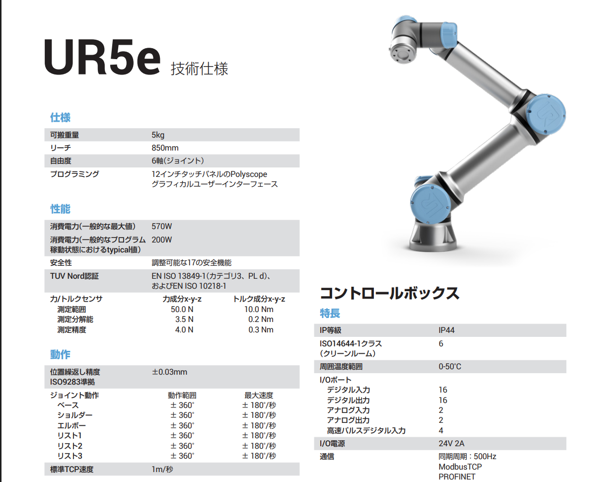
- 仕様書は絶対位置決め精度ではない！
- ISO9283は同じ動作の繰り返し精度を測定する
位置がズレる原因↓
位置がズレる原因は3つ
① 設計と実機のズレ
- リンク長の公差、原点オフセット
- TCP・ベース設置の測定誤差
毎回同じだけずれる
→ 校正・ティーチングで吸収できる
② 時間変動
- 暖機による熱ドリフト（0.05〜0.2 mm）
- 経年でバックラッシュが増える
校正では取れない
③ 動作条件
- 進入方向（バックラッシュ）
- 速度、ペイロード、姿勢
同じ点でも指令の出し方で変わる
絶対誤差の大きさを決めるのは①
実務で悩まされるのは②と③
位置制御だけでは難しいタスク
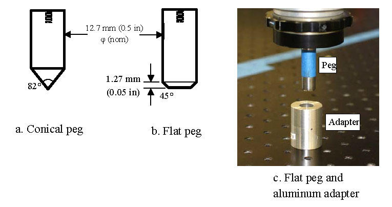
- 狭い場所に部品を入れる(例:Peg-in-holeタスク)などは位置制御だけだと難しい
どういった工夫があるのか↓
RCC(Remote Center Compliance)
- 部品を嵌め合わせるなどの作業のずれを機械的に補償するツール
- RCC自体はコンプライアンス制御に置き換わっている印象だが、柔らかい部品で緩衝する考えは治具づくりで有用
コンプライアンス制御
- ばねのような制御をセンサでソフトウェア的に実現
- 手先のフォーストルクセンサを使う場合と使わない場合があります
フォース制御
- 任意の軸だけ一定の力をかける制御
- 手先にフォーストルクセンサが必要です
フォース制御とコンプライアンス制御の違い
→ 全画面表示
- フォース制御 → 一定の力をかける
- コンプライアンス制御 → ばねのように柔らか
オフラインシミュレーション
- オフライン(実機なし)のシミュレーション
- 動作前の事前検討
シミュレーションはなぜ重要か↓
ありがちなトラブル
- 1. ロボットの手先が届かない
実際に設置するとロボットの可動範囲が思ったより狭く手先が届かなかった→配置の再検討 - 2. 思ったより遅い
スループットの向上を期待したが実際に動かすと思ったより遅かった
シミュレーションで未然に防げる
シミュレーションの現状
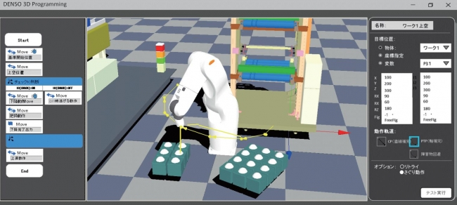
産業用ロボット
- 自社で提供
- 動作プログラムの作成・検証が可能
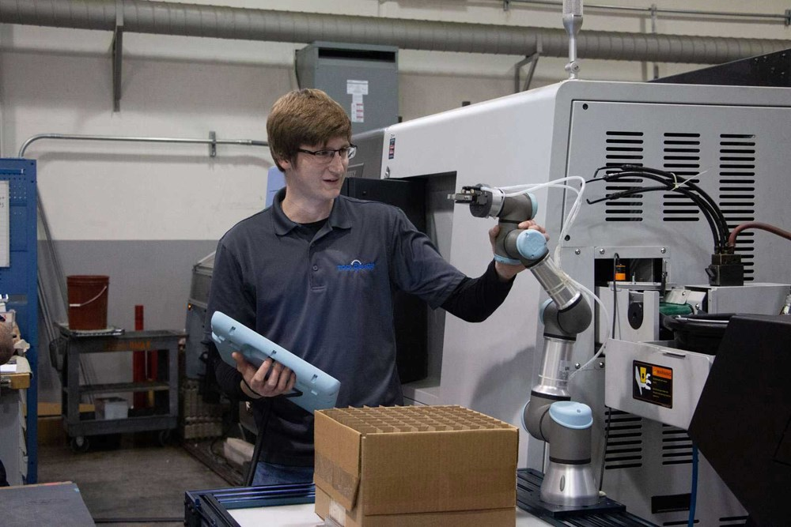
協働ロボット
- 直接ティーチング
- 動かすまで分からない
※Universal RobotはUR Studioが利用可能
協働ロボシミュレータの選択肢
- 個人的にはRoboDKがおススメ
- 色々なロボットに使える、直観的なGUI操作
- CADのエッジからウェイポイント自動作成など便利機能あり
※RoboDKは位置制御にしか使えない点に注意
ROSを使う？使わない？
ROSによる動作生成
- 複雑な動きを滑らかに
- 様々なロボットやセンサを統合したい
メーカー提供 or RoboDK
- 直線などの組合せ
- 周辺部品はメーカー品
具体例↓
ROSを動作生成で使う利点
ROS生成モーション
- PC上で完全に動作を計算してロボットに送る
- 複雑な動作軌道を精密に制御したい場合
メーカー提供モーション
- ロボットコントローラでモーションを計算する
- 動作軌道がシンプルor軌道が厳密でなくてよい場合
ROSをシステム設計で使う利点
ROSのシステム
- 分散・モジュール型なので並列で開発を進めやすい
- 複雑なシステムを他社ロボットに移植しやすい
- 対応センサやアクチュエータは何でも接続できるが、どう使うのかは自分次第
メーカー提供
- 並列での開発は難しい場合が多い
- 他社ロボットに移植不可だが、簡単な動作は問題にならない
- メーカー提供品しか使えないが、GUIなどが整備されててすぐ使える
付録：ロボットアーム選定
ロボットアームの選び方
ここでは協働ロボットを対象にしています
ロボットアームの軸の数
位置(3次元) + 向き(3次元) → 姿勢(6次元) = 6軸
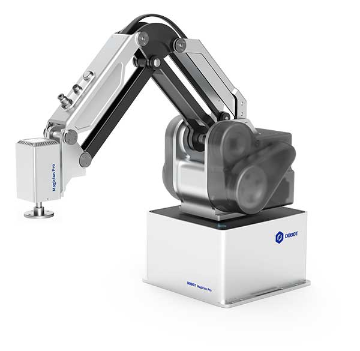
4軸ロボットの例
常に下向きという制限
ピックアンドプレースならこれでok
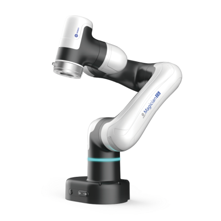
6軸ロボットの例
位置も向き自由
色々な作業に
6軸はざっくり4種類
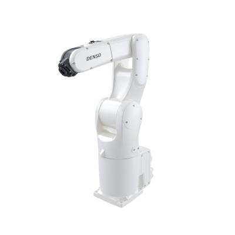
産業用ロボット
高精度・高信頼性
400万円〜

大手協働ロボット
人との協働・安全
300万円〜
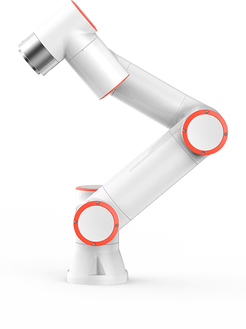
格安協働ロボット
コスト重視
50万円〜
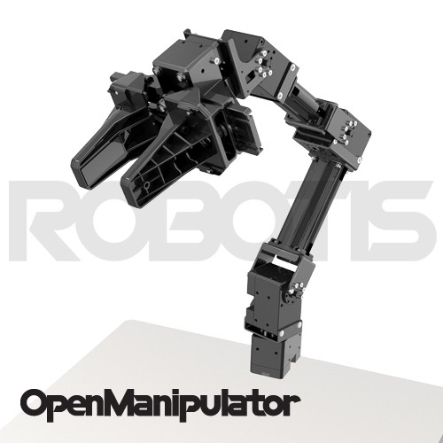
教育用ロボット
学習・原理理解
10万円〜
産業用ロボット
特徴
- FANUC、Yaskawa、Kawasaki、Denso
- 柵が必要
- 高精度・高速・高信頼性
- 製造業での実績豊富
- メンテナンス体制や機能が充実
大手協働ロボット
特徴
- UR、Franka Emika、DOBOT
- 人との協働作業が可能
- 安全機能内蔵
- 直感的なプログラミング
- 柔軟な外部制御(メーカーによる)
格安協働ロボット
特徴
- DOBOT、xArm、FairInovation
- コストパフォーマンス重視
- 位置制御くらいなら基本機能は十分
- Python制御対応が多い
- メーカーによっては故障リスクもある印象
教育用ロボット
特徴
- 勉強用途
- 組み立てから学習可能なものもある
- 低コストに始められる
- 原理理解に適している
付録：UR Tips
- Universal robotユーザが多いので
- Universal robotを使う上での便利機能の紹介
- 主にシミュレータとモーションの話
シミュレータ UR Studio
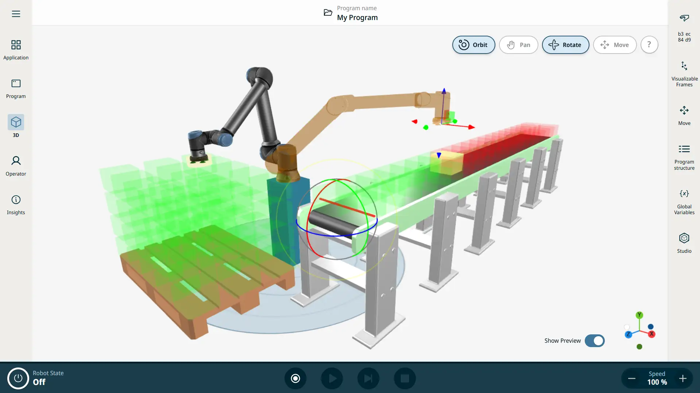
- オンライン、無料で使える
- 25年8月時点では動作が遅いが後々改善されるはず
- 機能はRoboDKの方が上だが、これで十分な場合も多いのでは
モーション ver2
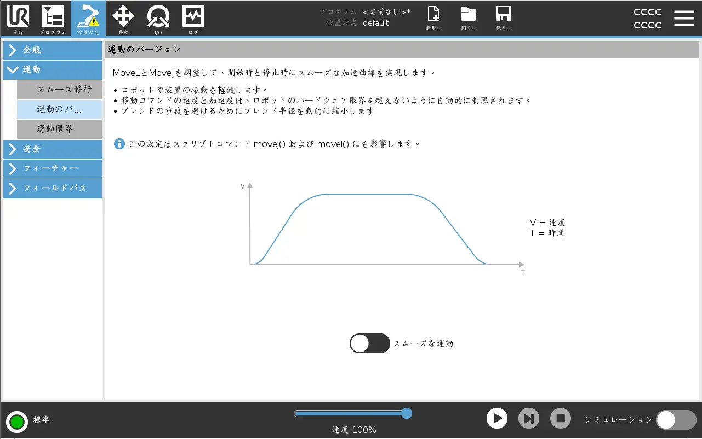
- Polyscope ver5.22から使えるように(今後はこれが標準)
- MoveJ(PTP),MoveL(LIN)ので振動が少なくなる
- ブレンド半径が大きすぎる場合は自動調整
- 調整すればROSレベルで滑らかに動ける
フォースモード
- URのフォース制御
- 位置&向きの6軸について位置/力の制御を選択可能
- 一定の力で押し付ける作業が得意
URの回転表現について
→ 全画面表示
- デフォルトの回転表現は回転ベクトル
- RPY（ロール、ピッチ、ヨー）で使うには変換が必要
- Pythonの場合scipy.spatial.transformのRotationが便利
servoJ/Lの注意点
→ 全画面表示
- servoJ/Lは最短&最速で移動するため危険！
- ①事前にmoveJ/Lでゆっくり動かして軌道を確認
- ②途中で意図しない姿勢を取っていないか必ず確認